1. Знакомство с GitPM
GitPM – Git Project Manager – десктоп-приложение для управления локальными Git-проектами.
Возможности ПО:
- Централизованное управление проектами – единый интерфейс для всех локальных Git-репозиториев
- Контроль задач разработки – планирование и отслеживание задач по проектам
- Автоматизация рабочих процессов – создание и запуск пользовательских скриптов
- Быстрый доступ к файлам – открытие папок проектов и удаленных репозиториев
2. Интерфейс приложения
Структура главного окна
Интерфейс разделен на две основные области:
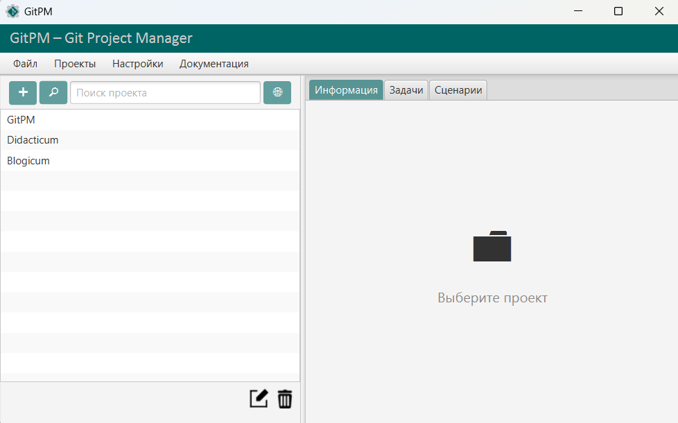
Левая панель – управление проектами
- Список всех добавленных проектов
- Поиск Git-репозиториев
- Кнопки управления: добавить, изменить, удалить
Правая область – функциональные вкладки
Вкладка "Информация"
Отображает основные сведения о выбранном проекте:
- Название и описание проекта
- Локальный путь к репозиторию
- Ссылка на удаленный репозиторий (при наличии)
- Дата добавления в приложение
- Кнопки быстрого доступа: открыть папку проекта и удаленный репозиторий
Вкладка "Задачи"
Обеспечивает управление задачами разработки:
- Список задач с возможностью фильтрации
- Инструменты добавления, редактирования, удаления задач
- Назначение приоритетов и сроков выполнения
- Отметка о выполнении
Вкладка "Сценарии"
Предназначена для создания и выполнения скриптов:
- Список пользовательских скриптов
- Панель управления выполнением: запуск, остановка
- Вывод результатов выполнения в реальном времени
Меню приложения
- Файл – Закрыть
- Проекты – Добавить проект, Найти проекты
- Настройки – Выбрать тип командной оболочки, Выбрать тип веб-браузера, Установить стандартный размер окна
- Документация – Руководство пользователя
3. Работа с проектами
Добавление проекта
Для добавления проекта нажмите кнопку 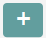 в панели проектов или выберите в меню: Проекты → Добавить проект
Заполните форму (поля "Описание" и "Remote URL" необязательны):
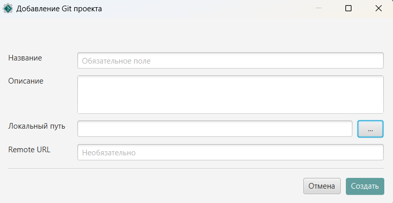
Нажмите кнопку 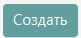
Требование: Для добавления проекта необходимо, чтобы в указанной директории уже был инициализирован Git-репозиторий (существовала папка .git).
Автоматический поиск проектов
Функция позволяет автоматически обнаружить Git-репозитории в указанной директории.
Для поиска проектов нажмите кнопку и выберите корневую директорию для поиска. Глубина поиска составляет 3 вложенных папки.
Управление проектами
Для выбранного проекта доступно:
- – редактирование информации о проекте
 – удаление проекта из списка (не удаляет файлы)
– удаление проекта из списка (не удаляет файлы)- Открытие папки проекта
- Открытие удаленного репозитория
Для списка проектов доступны:
- 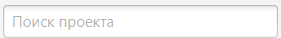 – поиск по названию проекта
- 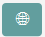 – фильтр проектов по наличию удаленного репозитория
Информация о проектах
Для просмотра полной информации о выбранном проекте перейдите на вкладку "Информация". Здесь представлены название, описание, локальный путь, удаленный репозиторий и дата добавления проекта. Адреса локального пути и удаленного репозитория можно скопировать, нажав на них. Открыть эти адреса можно по соответствующим кнопкам: "Открыть папку проекта" и "Удаленный репозиторий".
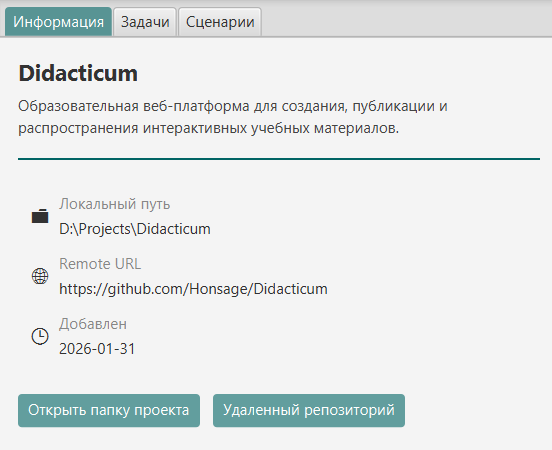
4. Управление задачами
Создание задачи
Для добавления задачи для выбранного проекта перейдите во вкладку "Задачи" и нажмите на кнопку в панели задач
Заполните форму (поля "Описание" и "Дедлайн" необязательны):
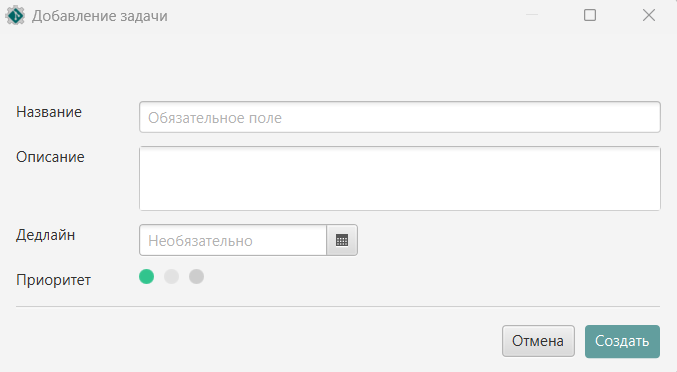
Нажмите кнопку
В списке задач создастся карточка задачи. Например:
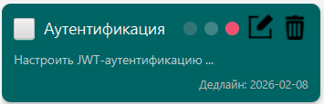
Примечание: Задачи привязаны к конкретному проекту. При смене проекта список задач обновляется.
Управление задачами
Для каждой задачи доступны следующие действия:
- – отметить выполнение задачи
- – установить высокий приоритет
- – установить средний приоритет
- – установить низкий приоритет
- – редактирование задачи
- – удаление задачи
Фильтрация задач
Для удобной навигации для списка задач предусмотрены фильтры. Автоматически задачи сортируются по статусу выполнения (невыполненные выше), по приоритету (высокий выше), по дедлайну (срочные выше).
Задачи можно искать по названию: 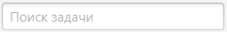
Дополнительно доступны кнопки фильтрации:
 – отобразить выполненные задачи
– отобразить выполненные задачи- 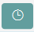 – отобразить просроченные задачи
- 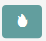 – отобразить важные задачи (высокий приоритет)
Пример внешнего вида вкладки "Задачи":
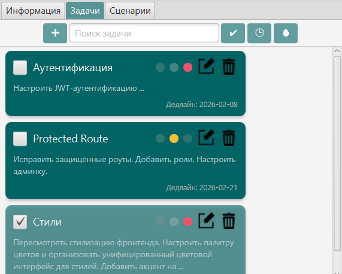
5. Настройка сценариев
Создание скрипта
Для добавления скрипта для выбранного проекта перейдите во вкладку "Сценарии" и нажмите на кнопку в панели скриптов
Заполните форму (поле "Описание" необязательно):
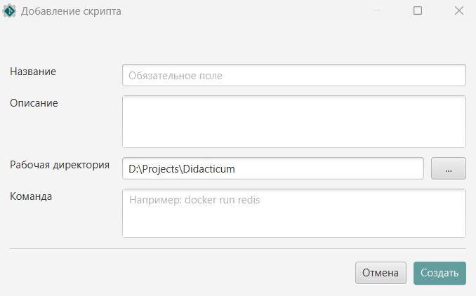
Нажмите кнопку
Примеры команд
# Запуск фронтенда (CMD)
cd frontend/ && npm run start
# Сборка проекта (Bash Unix)
mvn clean package
# Запуск тестов (PowerShell)
python -m pytest tests/
# Операции с git (Git Bash)
git status; git push
# Запуск docker-контейнера (WSL Bash)
docker run redis
Примечание: Команды выполняются в рабочей директории (указываемой при добавлении или редактировании скрипта). По умолчанию – корневая директория проекта.
Управление скриптами
Для списка скриптов доступно:
- 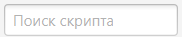 – поиск по названию скрипта
Для выбранного скрипта доступно:
- – редактирование информации о скрипте
- – удаление скрипта из списка
- 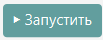 – начало выполнения скрипта
- 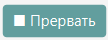 – остановка выполнения скрипта
Примечание: Вывод скрипта отображается в реальном времени в поле "Вывод".
Предупреждение: Запускаемая команда должна соответствовать типу используемой командной оболочки. В ином случае ПО не гарантирует корректность выполнения скрипта. Подробнее о выборе типа оболочки – в разделе
Меню и настройки приложения
Пример внешнего вида вкладки "Сценарии":
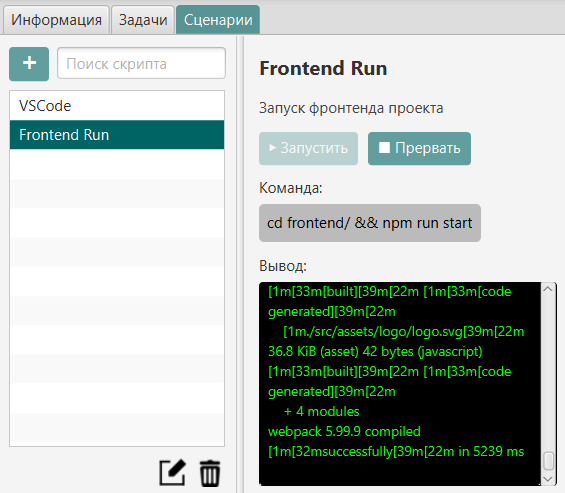
6. Меню и настройки приложения
ПО предоставляет следующие пункты меню:
Файл
Элемент меню Закрыть завершает работу приложения.
Проекты
Элемент меню Добавить проект позволяет добавить новый Git-проект в список.
Элемент меню Найти проекты позволяет выбрать директорию и сканировать ее на наличие Git-репозиториев.
Настройки
Элемент меню Выбрать тип командной оболочки позволяет установить используемую оболочку для запуска скриптов.

Предупреждение: Для корректной работы командная оболочка должна быть настроена на устройстве. В частности, для работы с Git Bash необходимо добавить в PATH папку Git (например, C:\Program Files\Git)
Элемент меню Выбрать тип веб-браузера позволяет установить тип используемого веб-браузера для открытия ссылок и документации.
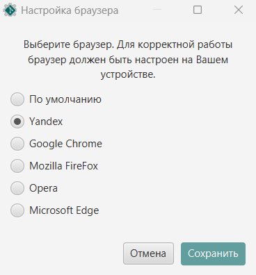
Предупреждение: Для корректной работы выбранный браузер должен быть настроен на устройстве. Т.е. исполняемый файл браузера должен находиться в реестре (можно проверить командой start имя_браузера в консоли, например: start chrome).
Элемент меню Установить стандартный размер окна восстанавливает размеры главного окна приложения по умолчанию.
Документация
Элемент меню Руководство пользователя открывает данное руководство по эксплуатации в браузере.
Примечание: Размеры окна, тип браузера и командной оболочки сохраняются автоматически при закрытии приложения.
7. Горячие клавиши
| Действие |
Сочетание клавиш |
| Добавить проект |
Ctrl + N |
| Поиск проекта |
Ctrl + F |
| Добавить задачу |
Ctrl + T |
| Добавить скрипт |
Ctrl + S |
| Открыть справку |
F1 |
| Закрыть приложение |
Alt + F4 |